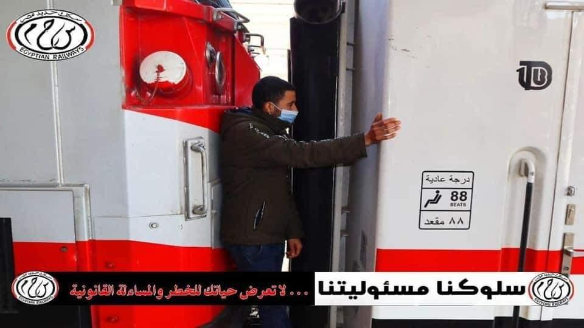
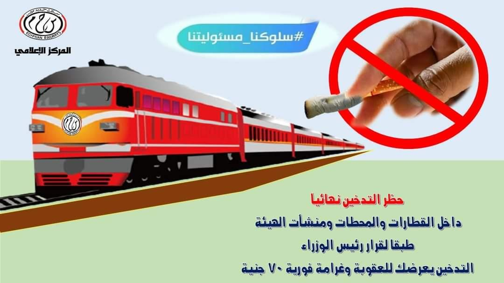
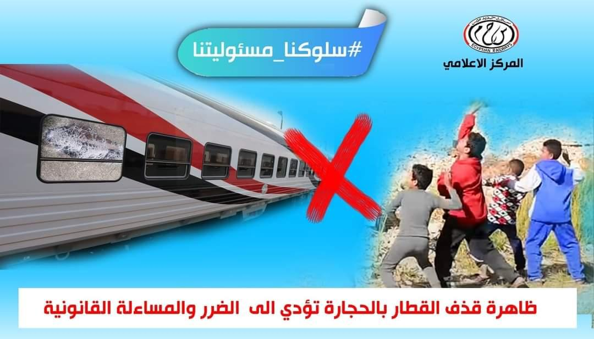
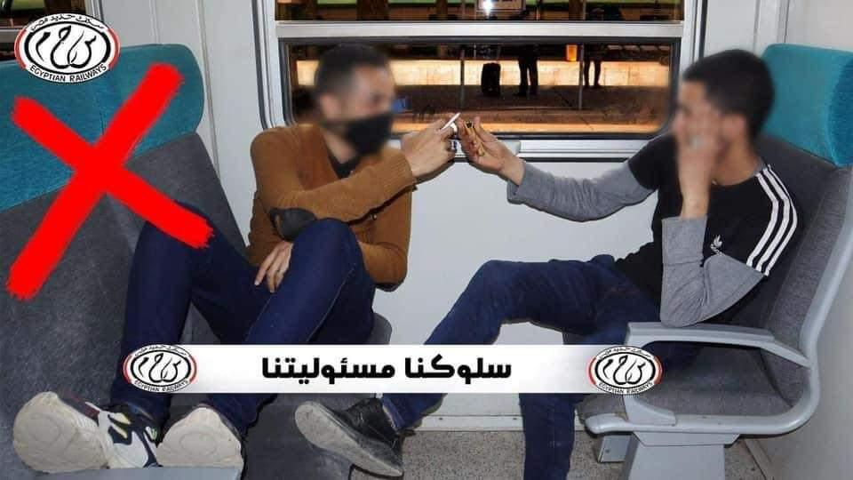
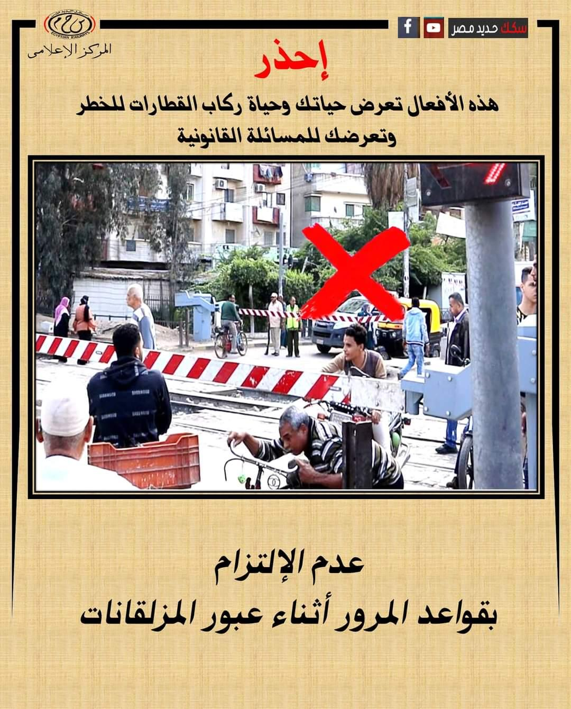
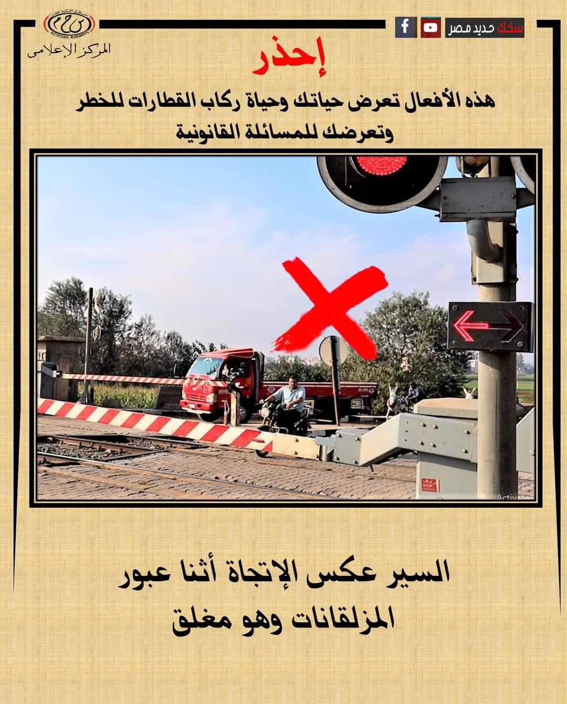
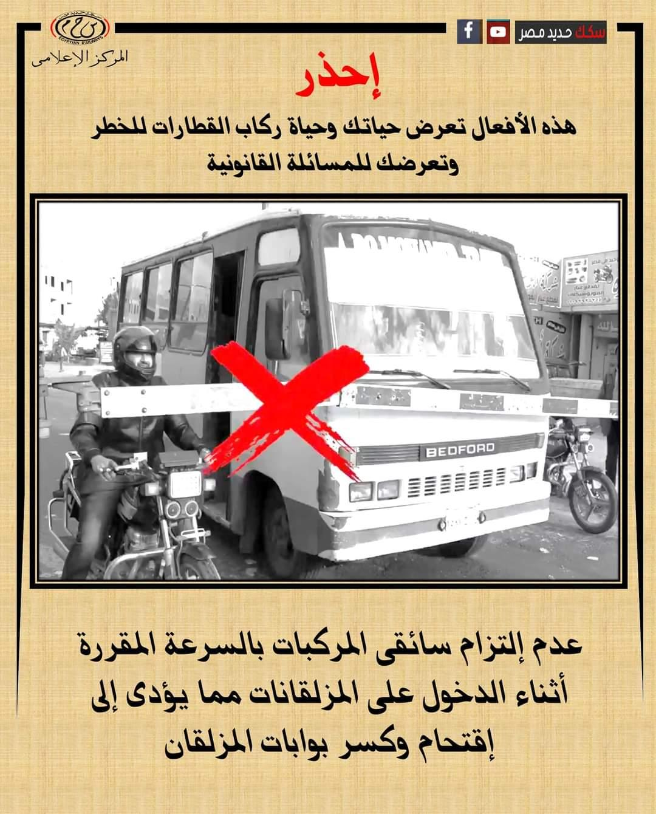
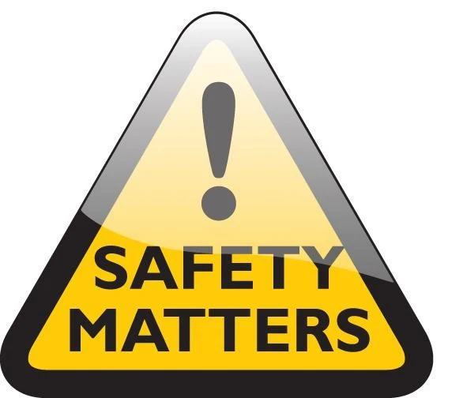

شعارنا سكك حديد "منضبطة - نظيفة -آمنة - متطورة "
تعد السلامة أحد أهم الإجراءات التي تتخذها الهيئة القومية لسكك حديد مصر في جميع قطاعاتها من أجل الحصول على خدمة آمنة ومريحة لمستخدمي هذا المرفق الهام.
وتقوم الهيئة القومية لسكك حديد مصر بعدة إجراءات لضمان راحة وسلامة الركاب المستخدمين لمرافق الهيئة كما يلي.
إجراءات تخص العاملين بالهيئة وتشمل:
- الفحص الطبي الدوري للعاملين للتأكد من لياقتهم الصحية سواء البدنية او النفسية بما يتناسب مع طبيعة عمل كل منهم.
- التحليل الدوري والمفاجئ للكشف عن المخدرات.
- التدريب المستمر لرفع كفاءة العاملين في كافة التخصصات.
- استخراج تصاريح ورخص السلامة لجميع الوظائف الحرجة للسلامة (قائد قطار - مساعد قائد قطار - مراقب التشغيل – فني حركة وبلوك – ناظر محطة - فني مناورة - خفير المزلقان - رئيس القطار والكمساري - الجرارات فني صيانة سكة - فني إشارات - براد العربات - ميكانيكي جرارات - كهربائي جرارات ).
إجراءات تخص الجرارات والعربات (ركاب – بضائع) وتشمل:
- صيانة وفحص يومي للجرارات والعربات قبل القيام بكل رحلة .
- صيانة دورية للجرارات كل خمسة عشر يوم.
- صيانة دورية للعربات كل ثلاثة شهور.
- عمرة عمومية للعربات كل سنة ونصف.
- عمرة خفيفة للجرارات كل ثلاثة سنوات.
- عمرة متوسطة للجرارات كل ستة سنوات.
- عمرة جسيمة للجرارات كل اثني عشر سنة.
- التطوير المستمر بإدخال جرارات وعربات جديدة لتقديم خدمة أفضل باستمرار
- إجراءات تخص البنية الأساسية .
- الصيانة الدورية للسكك ومنظومة الاشارات.
- التطوير المستمر لمنظومة الإشارات بغرض زيادة وسائل الأمان أثناء تشغيل الجرارات
- وزيادة معدل التقاطر وانضباط توقيتات القيام والوصول.
إجراءات تخص المحطات وتشمل :
- توفير وسائل التأمين الاطفائي بالمحطات.
- توفير وسائل الراحة والأمان لحركة المسافرين داخل المحطات
- ونظرا لأن منظومة نقل الركاب هي علاقة مشتركة بين الهيئة القومية لسكك حديد مصر والجمهور المستخدم لهذه المنظومة فقد تلاحظ وجود بعض السلوكيات الخاطئة التي تؤثر سلبا علي سلامة تشغيل المنظومة وكفاءتها وهذه السلوكيات تتمثل فى الأمثلة الآتية:
السلوكيات الخاطئة التى يرتكبها بعض للركاب
| السلوك الخاطئ | الخطر الناتج عنه |
| عدم التزام الركاب بأبواب الدخول والخروج | اعاقة حركة الركاب والتداخل بينهم مما يؤدى الى حدوث تزاحم بين الركاب |
| جلوس الركاب على التصادمات الخرسانية بنهاية الارصفة | يعرض حياتهم للخطر نتيجة اصطدام اى اجزاء بالجرار بهم او السقوط على السكة |
| جلوس الركاب على حافة الأرصفة يعرض حياتهم للخطر نتيجة اصطدام القطارات بهم او السقوط من على الارصفة داخل السكة | يعرض حياتهم للخطر نتيجة اصطدام القطارات بهم او السقوط من على الارصفة داخل السكة |
| قيام بعض الركاب باستقلال القطار والنزول منه من الجهة المخالفة على السكة وعدم استخدام الارصفة | يعرض حياتهم للخطر نتيجة سقوطهم على السكة او اصطدام القطارات بهم فى حالة مرور قطار فى هذا التوقيت |
| نزول بعض الركاب والسير على السكك والقضبان لاستقلال القطار قبل وصوله الى المحطة يعرض حياتهم للخطر نتيجة وجودهم وسط حركة القطارات على السكك مما قد يعرضهم للاصطدام بالقطارات او اصابتهم نتيجة سقوطهم على القضبان | يعرض حياتهم للخطر نتيجة وجودهم وسط حركة القطارات على السكك مما قد يعرضهم للاصطدام بالقطارات او اصابتهم نتيجة سقوطهم على القضبان |
| قيام بعض الركاب باستقلال القطار والنزول منه اثناء المسير يعرض حياتهم للخطر نتيجة سقوطهم على الارصفة او سقوطهم أسفل عجلات القطار | يعرض حياتهم للخطر نتيجة سقوطهم على الارصفة او سقوطهم أسفل عجلات القطار |
| عبور السكك للانتقال من رصيف لآخر وعدم استخدام الأنفاق والكبارى المخصصة لذلك يعرض حياتهم للخطر نتيجة اصطدام القطارات بهم أثناء عبورهم من على السكك او اصابتهم نتيجة سقوطهم على القضبان | يعرض حياتهم للخطر نتيجة اصطدام القطارات بهم أثناء عبورهم من على السكك او اصابتهم نتيجة سقوطهم على القضبان |
| التسطيح فوق العربات او الوقوف بين العربات وعلى جانبى الجرار  | يعرض حياتهم للخطر نتيجة سقوطهم أسفل عجلات القطار |
| التدخين داخل القطارات  | قد يؤدى ذلك الى حدوث حريق وتعرض حياة الركاب للخطر ويؤدي التدخين إلى مضايقة الاخرين |
| قيام بعض الصبية برشق القطارات بالحجارة اثناء المسير  | يعرض حياة الركاب للخطر نتيجة رميهم بالحجارة |
| عدم المحافظة على نظافة القطار وإلقاء المخلفات | يؤدى ذلك إلى تشويه المنظر العام داخل القطارات |
| العبث بالقطارات من كراسى وابواب ودورات مياه  | عدم المحافظة على المهمات الداخلية للقطار يؤثر على جودة الخدمة المقدمة لجمهور الركاب وزيادة أعمال الصيانة |
| قيام بعض الركاب بالكتابة على القطارات من الداخل | يؤدى ذلك إلى تشويه المنظر العام داخل القطار |
| عدم حجز التذكرة قبل الركوب | يعرض الراكب للغرامة او تسليمه للشرطة |
| التعامل مع الكمسرى بشكل غير لائق بسبب عدم دفع قيمة التذكرة والغرامة | التعامل مع الكمسرى بشكل غير لائق بسبب عدم دفع قيمة التذكرة والغرامة قد يؤدى ذلك إلى حدوث مشادات بين الكمسرى والراكب مما يعطل عمل الكمسرى |
| عدم التزام سائقي المركبات بقواعد المرور أثناء عبور المزلقانات  | يؤدى ذلك الى حدوث حوادث مما يعرض حياتهم للخطر |
| السير فى الاتجاه المعاكس أثناء عبور المزلقانات  | يعرض حياتهم للخطر نتيجة اصطدام القطارات بهم أثناء العبور |
| عدم التزام سائقي المركبات بالسرعة المقررة أثناء الدخول على المزلقانات  | يؤدى ذلك الى اقتحام بوابات المزلقانات وحدوث تلفيات وحوادث تعرض حياتهم للخطر  |
لذلك يجب علي جمهور المتعاملين مع السكك الحديدية تجنب كل الاعمال التي تؤدي الي الإضرار بأنفسهم وبالآخرين وتؤدي للاضرار بممتلكات الهيئة التي هي ملك الجميع من أجل خدمة أفضل وسلامة جميع مستخدمي مرفق السكك الحديدية.